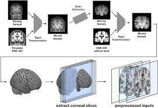

In this project on Dry Bean Classification, I implemented machine learning algorithms from scratch — including Naïve Bayes, Logistic Regression, and Quadratic Discriminant Analysis (QDA) — to classify seven types of dry beans using morphological features. After extensive exploratory data analysis, feature engineering, and dimensionality reduction (PCA), I evaluated each model's performance using accuracy, F1 score, and error metrics. QDA achieved the highest accuracy of 90.76%, highlighting its effectiveness for multi-class problems with distinct feature distributions.

Employed ResNet, EfficientNetB0 architectures to analyze MRI scans, achieving 89% precision in early-stage detection. Incorporated multi-modal data fusion using Pytorch, Tensorflow by combining MRI scans, improving accuracy to 95%
Text to SQL Conversion
Implemented BART-based model for Text-to-SQL conversion, achieving a ROUGE-L score of 0.8758 on test data. Leveraged data preprocessing and tokenization techniques, boosting SQL query generation accuracy by 40%.
-->
Certifications
Deep Learning
Skills:
Python, Computer Vision, Natural Language Processing, Speech Recognition,
Stanford - Machine Learning
Skills:
Data Mining
,R
,MATLAB
,
IBM - Enterprise-grade AI
Skills:
I Evolution, AI Industry Adoption Trends, Natural Language Processing and Virtual Agents
IBM Data Science Practitioner
Skills:Data Science Foundations, Data Gathering, Data Understanding, Data Modeling & Optimization, Design Thinking, Industry Use Cases
Research Paper
Developed a novel energy-based method for detecting repetitive motion in videos and achieved a 70% compression rate without compromising video quality, making it ideal for storage-limited environments.
Combined scene change detection and Fourier analysis to segment and isolate both repetitive and non-repetitive motions, enabling more intelligent video compression and reconstruction.
Proposed a zero-error compression technique by storing one representative cycle and reconstructing others using spline interpolation and error correction, preserving video fidelity in real-time applications
Built and evaluated three models—CNN, VADER, and XGBoost—to classify patient drug reviews into positive, neutral, and negative sentiments using the UCI Drug Review dataset.
.
Extracted actionable insights from patient feedback to help healthcare providers and pharmaceutical companies better understand patient satisfaction and side effects, supporting data-driven treatment improvements.